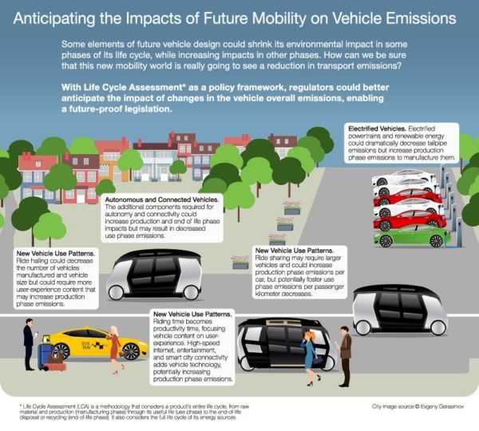
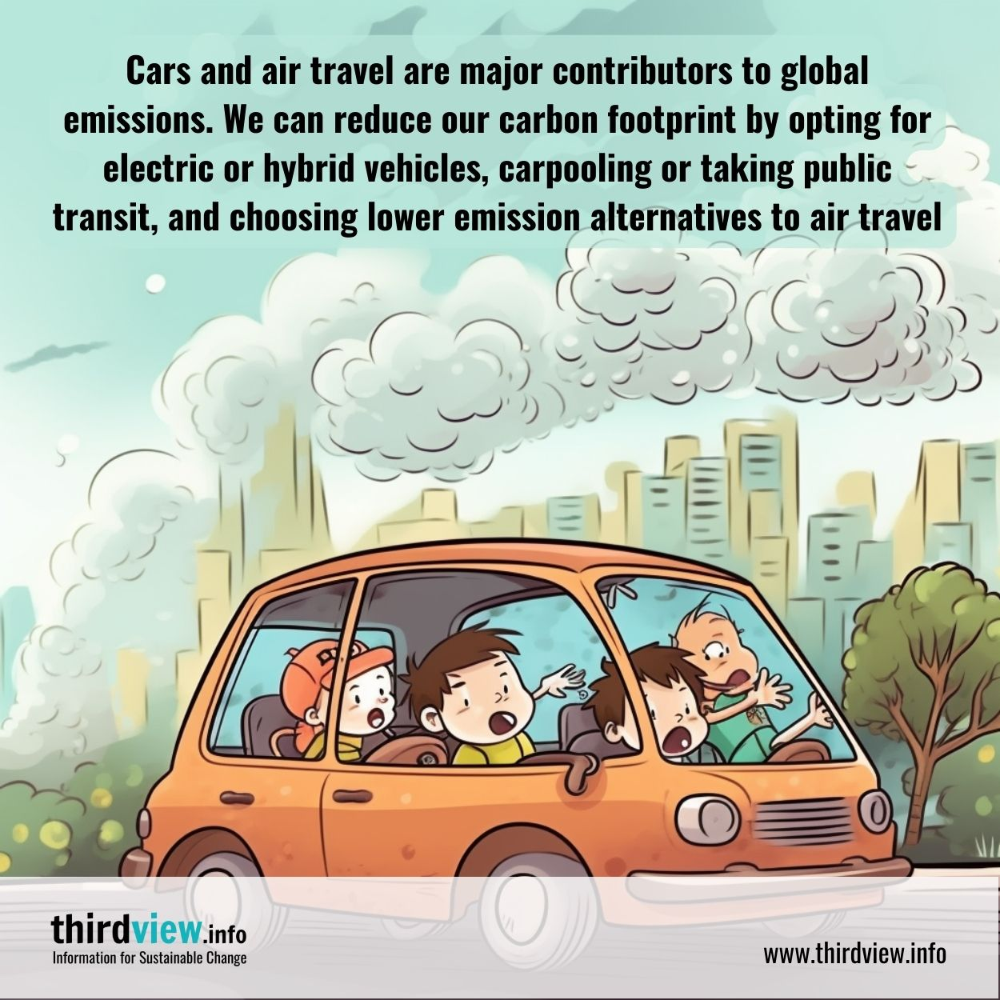
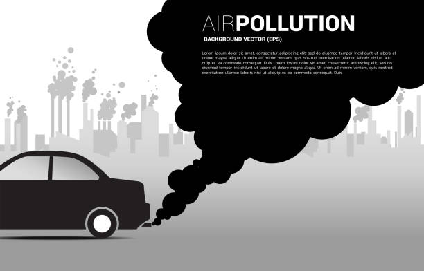
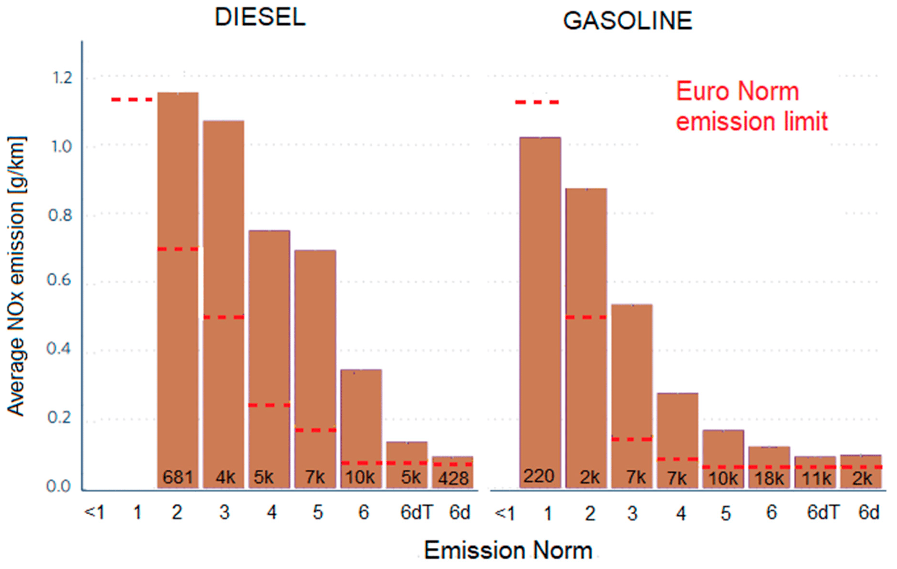
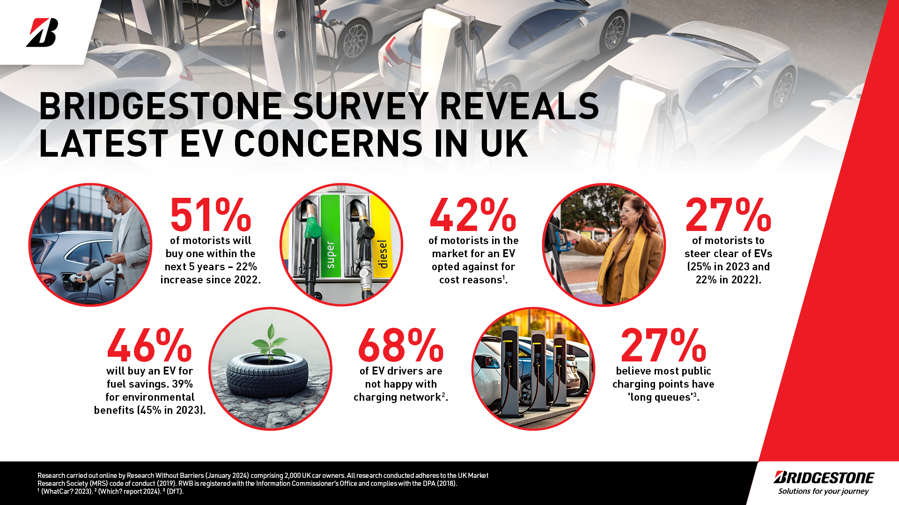

|  |  |  |  |
|  |
|
The transportation sector plays a pivotal role in the global economy, enabling the movement of goods and people over vast distances. However, the environmental footprint of this sector has become a significant concern in recent years, particularly as issues like climate change, air pollution, and resource depletion come to the forefront of global challenges. Among the key contributors to these environmental issues are the vehicles we rely on every day—ranging from cars and trucks to buses, motorcycles, and airplanes.
|
Vehicles, particularly those powered by fossil fuels such as gasoline and diesel, emit a substantial amount of greenhouse gases (GHGs), including carbon dioxide (CO₂), methane (CH₄), and nitrous oxide (N₂O), all of which contribute to global warming. In fact, the transportation sector is one of the largest sources of GHG emissions worldwide, accounting for nearly 24% of global CO₂ emissions. The increased concentration of these gases in the atmosphere leads to a rise in global temperatures, resulting in more frequent and severe weather events, melting polar ice, and rising sea levels
|
Beyond climate change, vehicles also have other adverse environmental impacts. The burning of fossil fuels generates air pollutants like nitrogen oxides (NOx), particulate matter (PM), and volatile organic compounds (VOCs), which contribute to smog formation and respiratory diseases. Urban areas, where vehicle density is high, often experience poor air quality, leading to serious public health issues, particularly among vulnerable populations such as children and the elderly.Moreover, vehicles contribute to environmental degradation through the extraction and consumption of non-renewable resources.
|